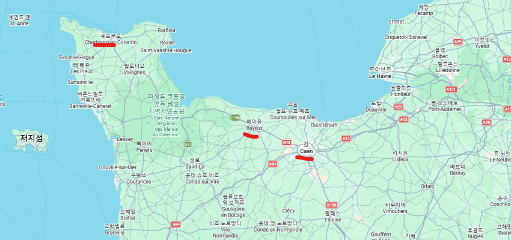
프랑스 캉-베이유-노르망디-셸부르 일대
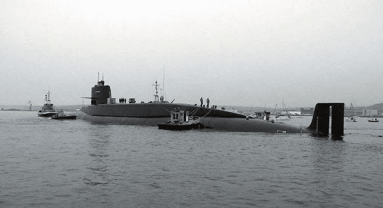
셸부르에는 르두타블급 핵잠수함이 전시되고 있다.
공개된 핵잠이 이거뿐인거로 기억함
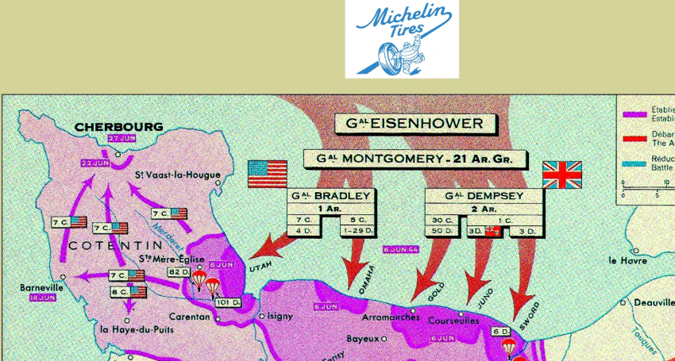
노르망디는 베이유를 거점으로 동쪽의 아로망슈부터 캉 까지가 영국/캐나다 일대. 카렝탕까지 이어지는 서부가 가장 유명한 미군 일대
렌터카없이 이동이 힘들고 주요버스도 여름철 일시적운영이라 패키지 투어가 유의미하다.
그런데 패키지투어가 국가별 상품이라 미군/캐나다군/영국군 루트가 나뉘어져있어서 카렝탕부터 캉까지 보려면 두번해야함..
노르망디가 미군쪽이 유명하지만 동쪽 아로망슈에 멀베리항 잔해가 있어서 투어로 같이보기에는 난점이 있음.
캉 셸부르 둘 다 페리선이 들어오기 때문에 영국에서 페리를 타고 건너오면 100% 노르망디 익스피리언스가 된다.
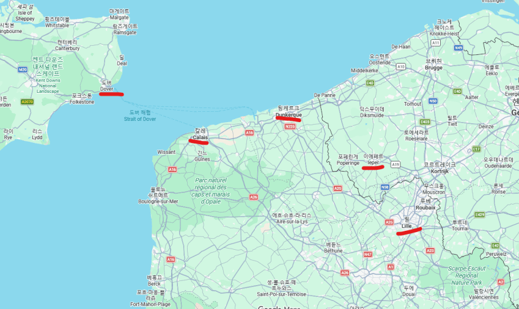
릴-이프르-덩커르크-칼레
릴에는 별거없고 유로스타역이 있다. 근데 영국가는 유로스타는 그냥 파리나 브뤼셀이 더 배차가 많다는듯.
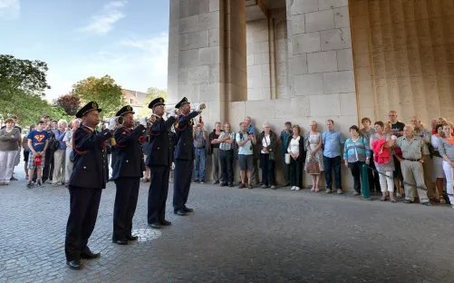
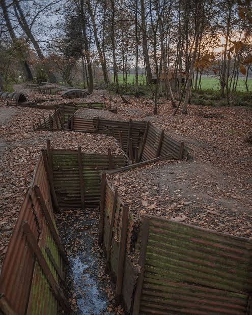
이에페르가 1차대전의 이프르 라서 참호전 전적지 투어가 가능하다고 자전거를 빌려서 돌 수 있다.
특이사항은 매일 오후 8시 last post라는 무명용사비 교대식이 볼거리라는데 덕분에 오후 8시까지 도시에 남아있어야한다.
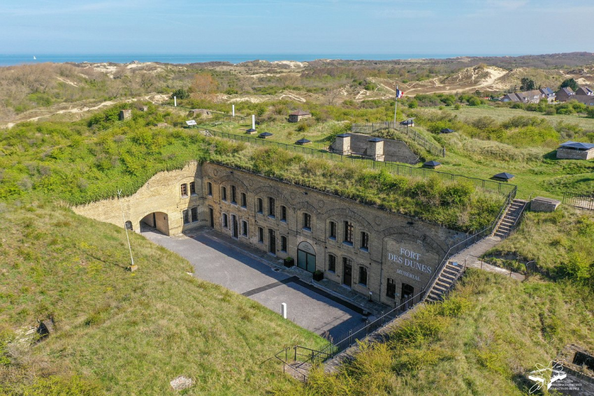
덩케르크는 그 해변과 연합군 지휘소가 여름철에 공개된다.
덩케르크 시내애 Queen Elizabeth라는 식당선이 덩케르크 철수전에 참전했었고 지금은 MENU1940이라는 호기심 넘치는 메뉴를 팔고있어서 가보고싶다..
아쉽게도 칼레-도버를 잇는 페리가 내 기억에 보행자용이 아니고 도버해협을 건너는 덩케르크 익스피리언스를 하려면 그냥 유로스타를 타야한다.
모두 서로 이어진 도시같지만 하나같이 철도 직결편이 없던것으로 기억해서 애매.
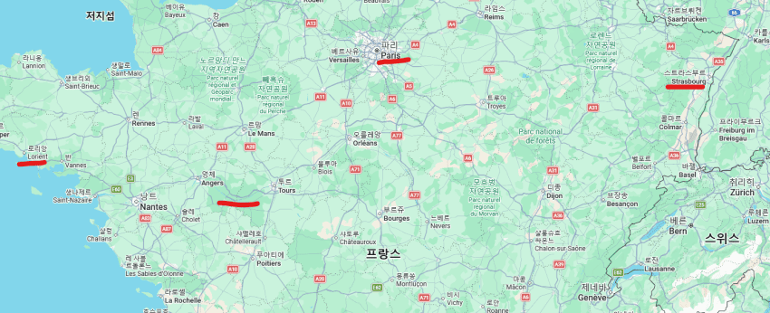
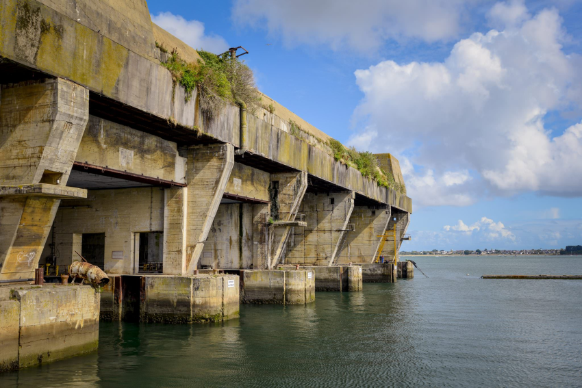
로리앙 - K3 콘크리트 유보트 기지가 있다. 영어투어는 여름철만 운영.
겨울철에는 학교 단체여행을 받는다는데 수학여행으로 유보트기지를 가는 프랑스 초등학생들을 상상해본다..
대서양 연안에는 브레스트 생나제르 라로셸등 과거 유보트 기지가 많지만 잠수함에 미친거도 아니고 로리앙이면 충분할듯
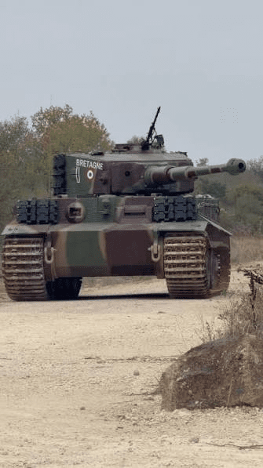
앙제(Angers)와 투르 사이에 있는 소뮈르 전차 박물관
빨리 항복한 덕분에 구제된 프랑스제 전차들이 많고 특이사항으로는 최근에 티거전차를 복원해서 어디에 쓸지 세간의 주목이 끌리고있다.
아마 폭동 진압에 투입될듯
보빙턴이 복원중이라고 피눈물을 흘리는 킹티거를 소유하고있다.
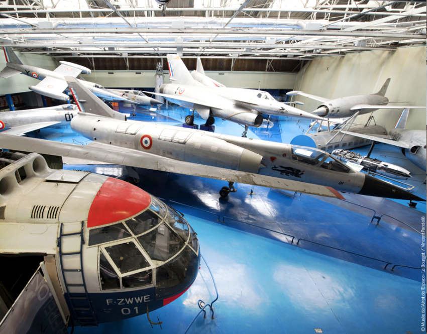
파리는 볼게 많지만 특이사항으로는 샤를드골 공항 가는 길에 르부르제 라는 옛 공항으로 만든 항공박물관이 있음
파리초등학생들이 현장학습 오는 듯.
1930년대 공항 느낌도 나고 프랑스 고유 항공기도 많지만 이 분야 최고는 미국의 스미소니언이라 그렇게 기대되는건 아닐지도
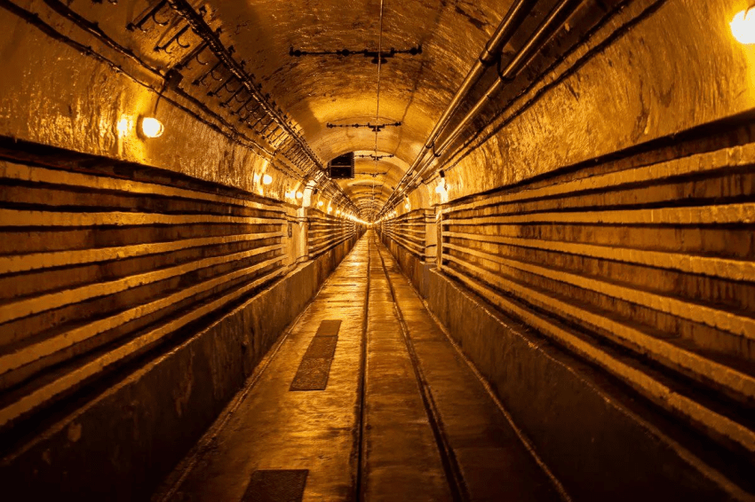
스트라스부르 혹은 카를스루에에서 라인강쪽으로 가면 마지노선 유적들이 남아있다.
근데 워낙 근교라 어떻게 접근할지 난감.
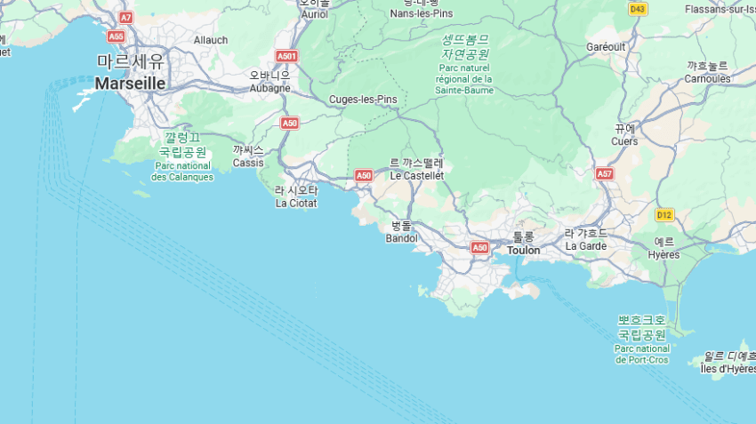
마르세유-툴롱
마르세유 앞의 프리울 섬이라는 곳에 독일의 요새들이 남아있다. 경치도 좋아보임
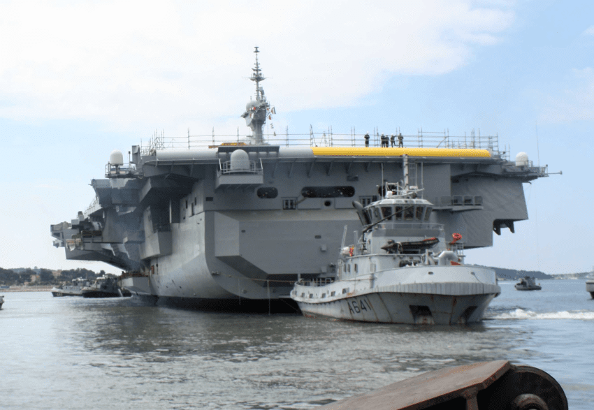
툴롱은 군항투어를 운영하고 있다. 운이좋으면 샤를드골 핵항모를 볼수 있다.
프랑스해군 요즘 하는거 없어서 보기 쉬울것같다.
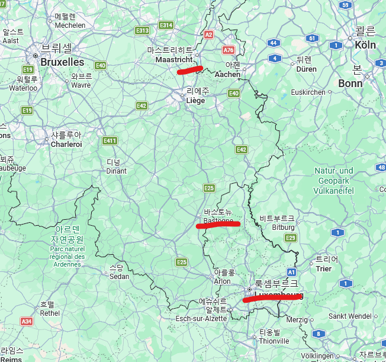
룩셈부르크-바스토뉴-에방에말
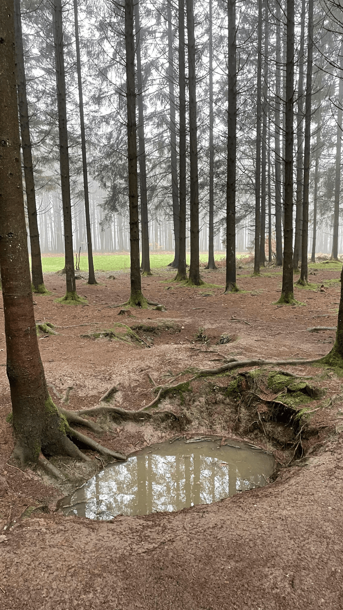
핵심은 바스토뉴. 한떄는 길이 7개가 지나다녀서 독일의 요충지였다더니 지금은 뭐가된건지 접근이 쉽지않다.
브뤼셀에서 가는거보다 룩셈부르크에서 가는게 더 용이함
바스토뉴전투 전적지가 많고 자전거를 빌려 순회할수 있다.
룩셈부르크에서 바스토뉴로 가는 길에는 엉뚱하게도 패튼장군 묘지가 있다.
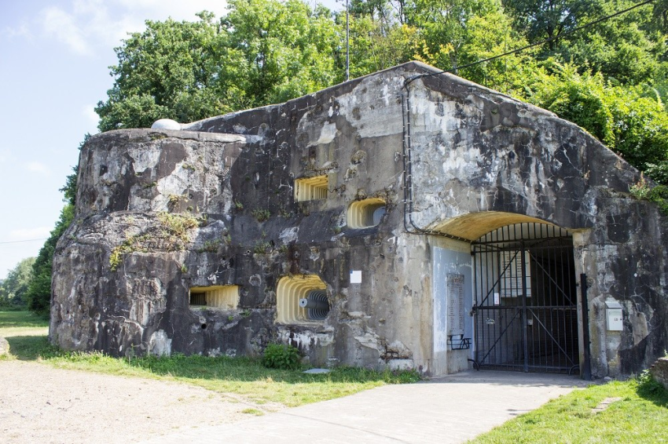
북쪽에는 독일 공수부대의 쇼가 펼쳐졌던 에방 에말 요새가 있어서 묶어서 가고싶은데 대중교통이 쉽지않다. 네덜란드의 마스트리트에서 오는게 더 쉽다는 듯..
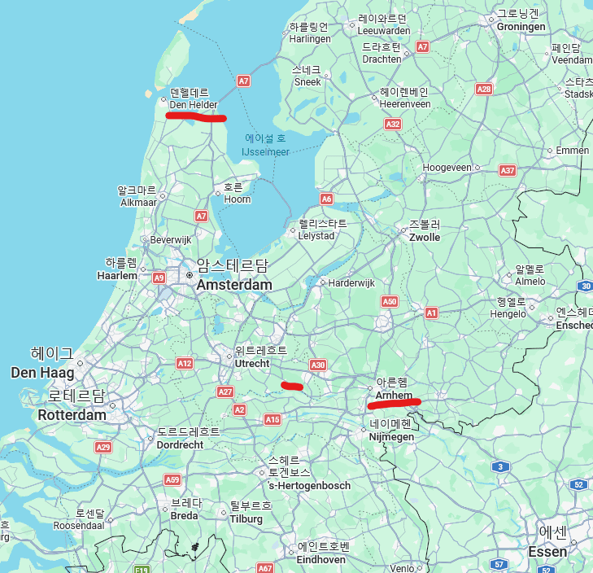
네덜란드 덴헬더-도른-아메롱겐-아른험
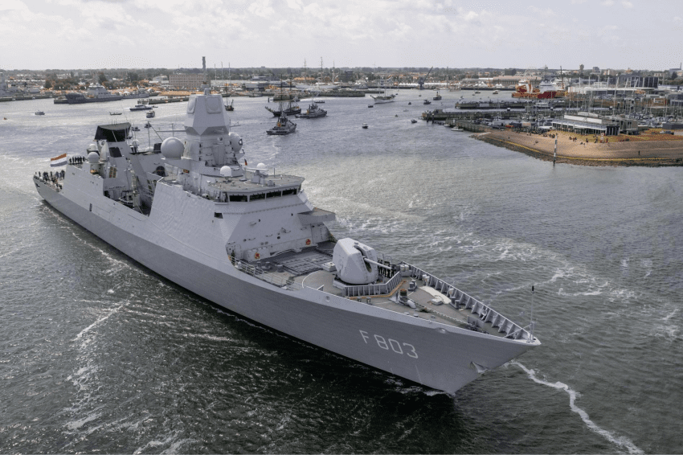
덴 헬더에서 네덜란드 해군 군항 크루즈가 운영된다. 근데 네덜란드 핵잠도 핵항모도 없어서 그렇게 가보고싶은건 또 아닌듯.
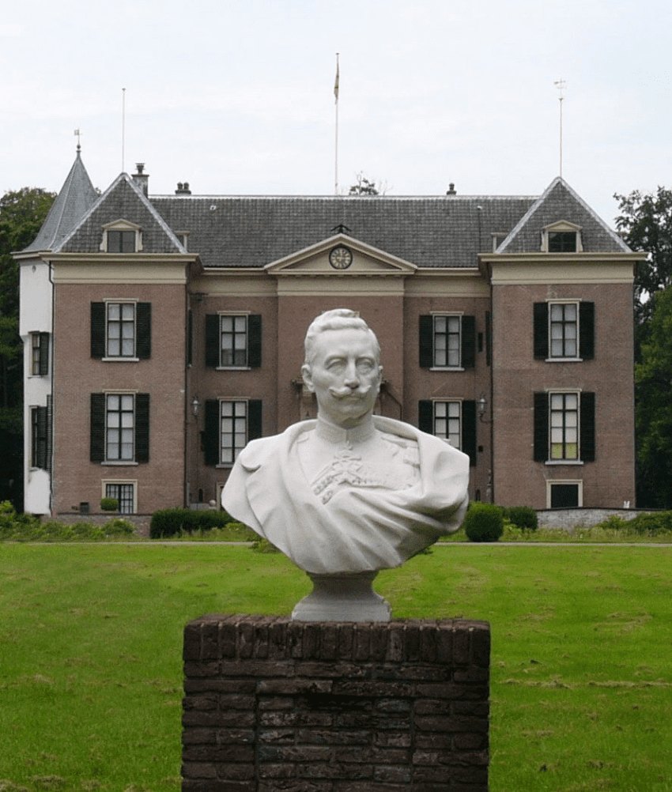
위트레흐트와 아른험 사이에는 도른과 아메롱겐에 빌헬름 1세가 유배간 집들이 있다.
콤팩트한 궁전 느낌이라 볼만함
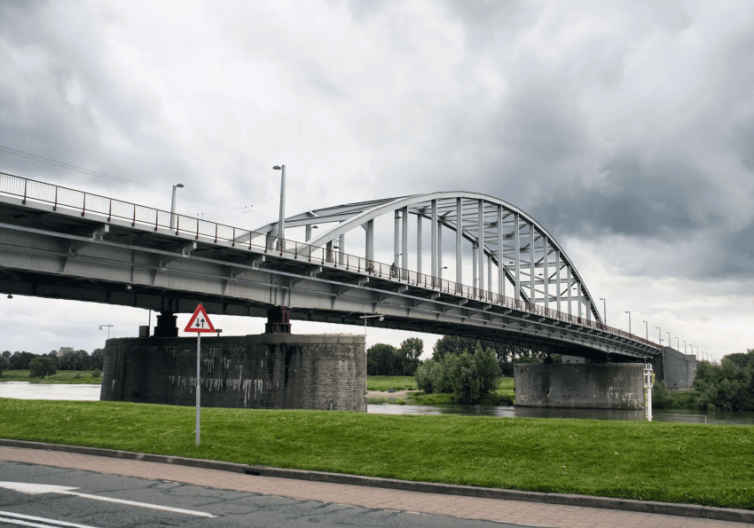
아른험은 마켓가든 작전의 전적지 투어가 가능하다 전적지라고 해봐야 시내 그 자체지만
영화 '머나먼다리'가 작전의 행방을 충실하게 촬영한 다큐멘터리 느낌이라 영화를 보고가면 마켓가든 익스피리언스가 가능하다.
네이메헌, 에인트호번도 마켓가든 전적지지만 지도로 조사해본 바로는 마켓가든의 흔적이 남아있는것으로는 안보임.
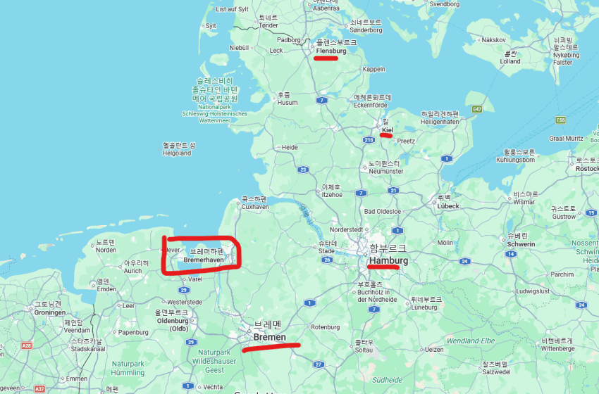
독일은 양파처럼 파면팔수록 뭐가 나와서 가보고싶은곳만 늘어나는 역효과가 있음.
브레멘을 거점으로 북쪽의 브레머하펜과 빌헬름하펜을 갈 수 있다.
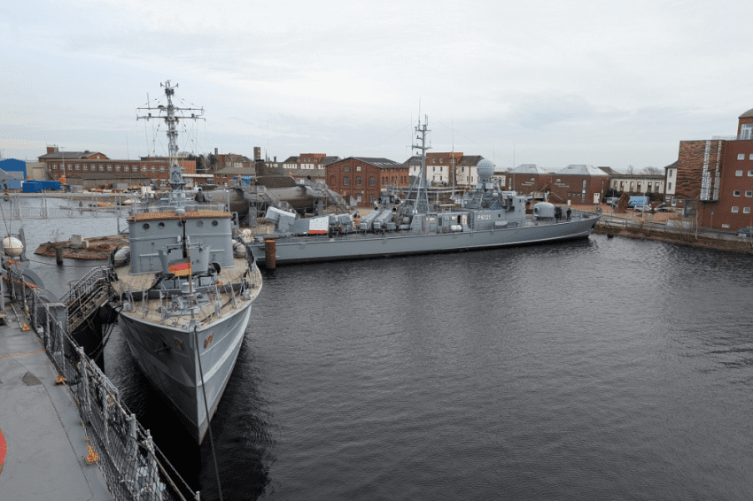
빌헬름하펜은 "항만"크루즈가 있는데 이게 군항도 들어감
아쉽게도 최근에 러시아의 사보타지가 있어서 군항 접근은 중단되었다..
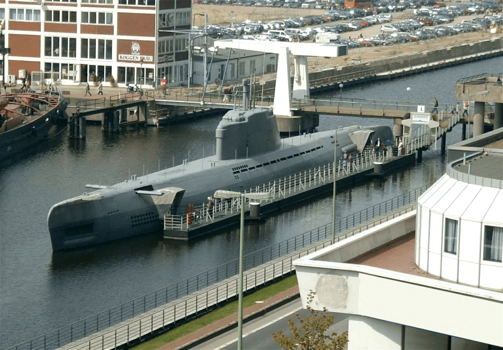
브레머하펜에는 전기 유보트가 있는데 이게 유보트계의 전설의 포켓몬임
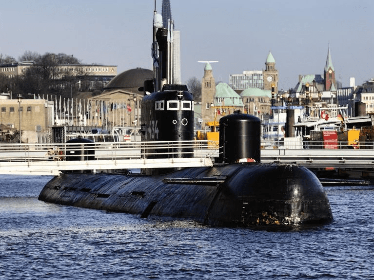
함부르크에는 잠수함이 있는데 이거 동독도 아니고 그냥 찐 소련 잠수함이라 비정사임.
그리 가치가 높지는 않음
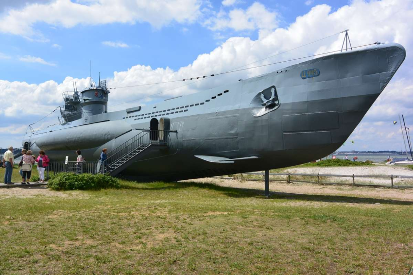
킬 위에는 U995라는 7형 잠수함이 있는데 잠수함계의 소나타.
정사라서 봐야함.
그 외 페마른에도 잠수함이 하나가 있는데 내 기억에는 서독꺼라 비정사
플렌스부르크는 가보고싶지만 별로 되니츠 정부청사가 남아있는게 아니라서 애매..
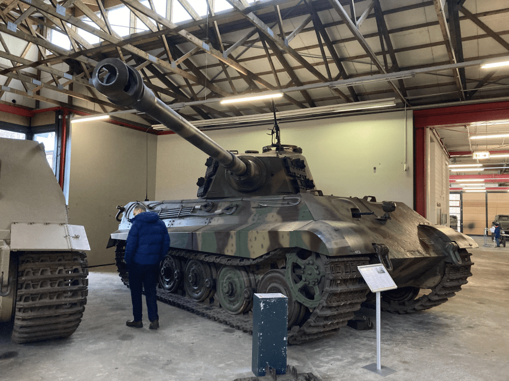
함부르크와 하노버 사이 졸타우에는 전차박물관이 있어 낙지시리즈가 많이 전시되어있다. 근데 이 지역 테마는 잠수함인데 혼자 전차라서 좀 위치 베를린 옆으로 옮겨줬으면.
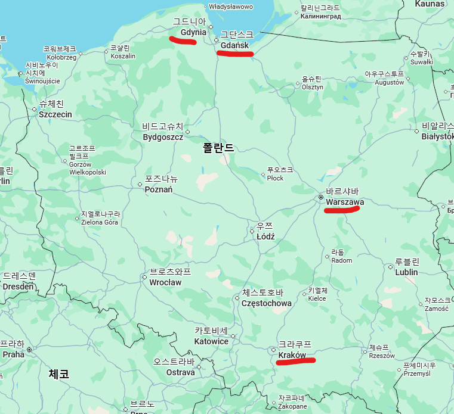
폴란드 - 아우슈비츠 바르샤바 단치히
아우슈비츠와 바르샤바는 굳이 더 알아본건 없지만
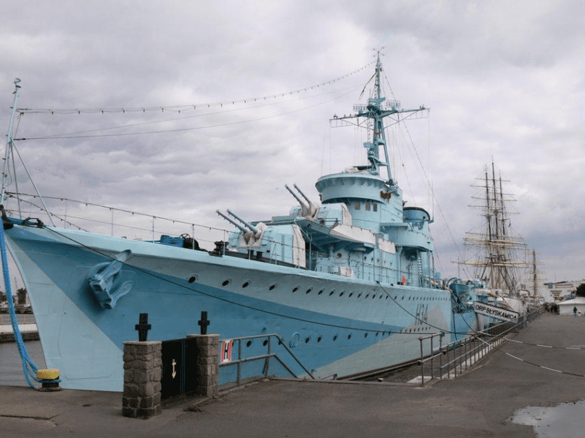
그디니아에는 2차대전 시절 잠수함과 구축함이 여름에 개장한다.
여기도 폴란드해군 군항크루즈가 있었던거같음. 마찬가지로 핵잠도 핵항모도 없어서 가치는 크지않은듯.
단치히에는 2차대전이 시작된 베스테르플라테와 우체국이 있다.
우체국이 올해 공사를 해서 최근에야 개장했는데 이젠 겨울이라 그디니아가 문을 닫아서 매우 곤란하다..
내 기억에 폴란드는 박물관들이 월요일에 휴장하는 이상한 락다운이 있어서 일정짜기 힘든듯.
단치히-아우슈비츠 가는 야간슬리퍼 열차가 있는것으로 들었는데 매우 재미있는 수용소 익스피리언스일것같음
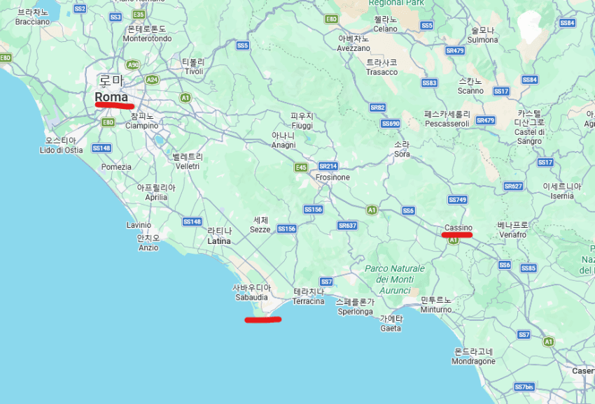
로마-안치오-카시노
로마에는 무쏠리니 벙커와 항공박물관이 있다.
항공박물관에는 이탈리아 항공기들이 있는데, 이탈리아 비행기들이 또 찾아보자면 다른곳에도 많아서 로마의 다른 경쟁자들에 비해 찾아갈 이유가 빈약한거같음.
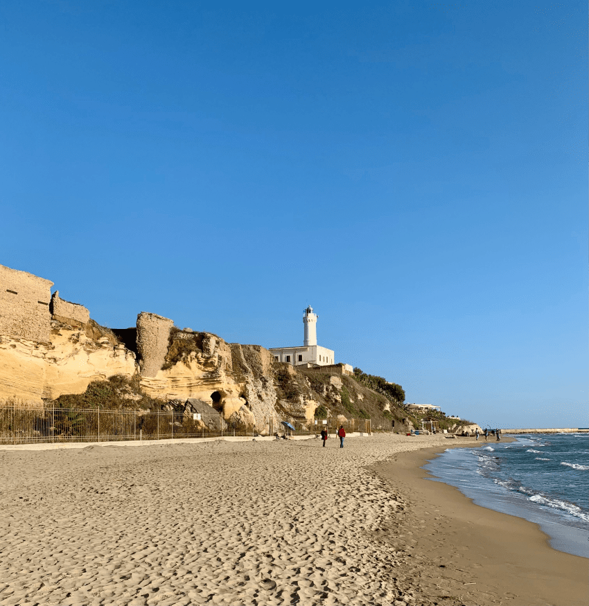
안치오는 안치오상륙전 박물관과 전적지가 있다.
전적지 투어도 있는데 작은곳이라 투어까지 낄 필요는 없어보임. 1월중에 안치오상륙전 기념행사가 있어서 겨울에 따뜻하게 가도 좋을것같다.
카시노에서는 몬테카시노 전적지 투어가 가능하다.
투어패키지도 있는데 존나 삐리해서 그냥 다큐멘터리 보고 혼자가는게 나은듯.
아쉽게도 안치오에서 바로 가는 교통편이 없고 로마나 나폴리에서 가는게 좋을듯.
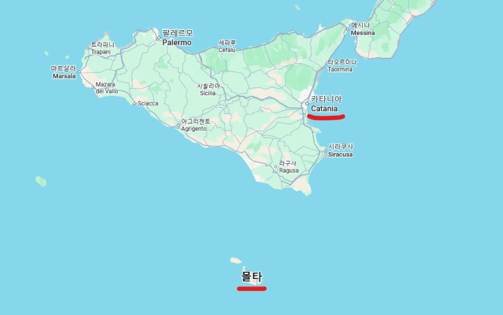
카타니아, 몰타
카타니아도 시실리 상륙전 전적지 투어가 가능하다는데, 어떻게 접근해야할지 모르겠다 가까운 공항이 팔레르모고 섬 반대편같아서.
별로 고생해서 기어갈 가치는 없어보임
몰타에는 몰타항공전에서 쓰인 글래디에이터 3대중 하나가 남아있다. 워썬더에 나옴..
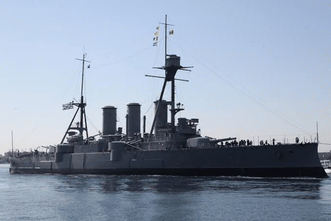
그리스- 아테네
드레드노트같이 생긴 장갑순양함이 하나 있는데 지금 시대에 드레드노트 비슷한거 보는 방법이 이거랑 일본의 미카사 정도로 기억.
근데 미카사쪽은 가짜니까.
한번 보고 싶은데 좀 기회비용의 역설이라고 아테네까지 가면 3일은 있어야할거같은데 그럴시간은 없고... 고민
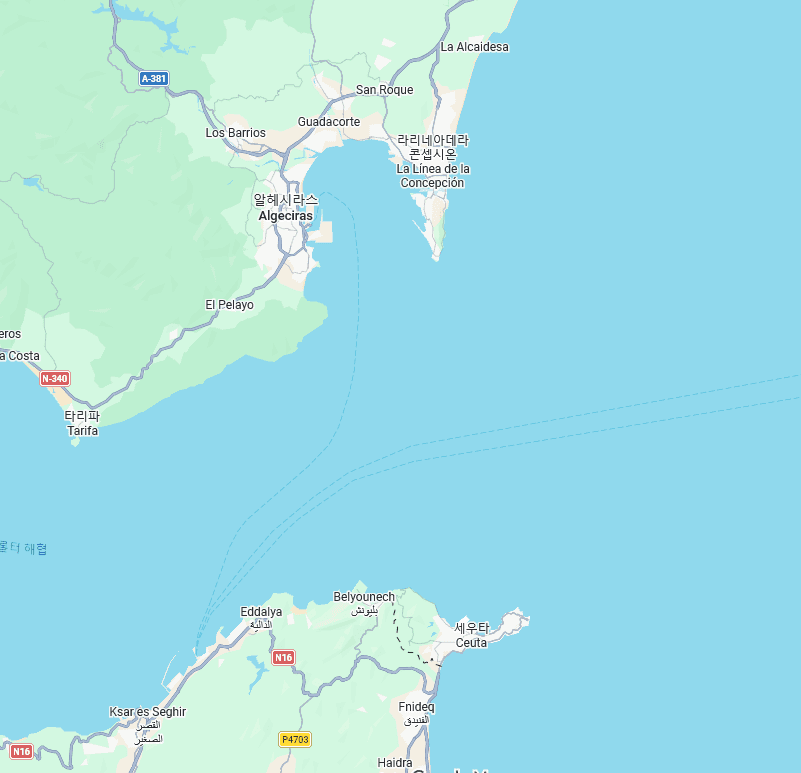
지브롤터-세우타
보통 이 둘을 묶나 싶은데 지브롤터에서 버스타고 알헤시라스가서 페리를 타고 세우타에 가는게 유보트감시조 익스피리언스
지브롤터에는 땅굴이 있고 100톤포라는 무거운 포가 있는데 이게 몰타와 지브롤터에 두대 있어서 몰타까지 가면 도전과제가 해금된다.
넬슨이 드럼통에 담겨온곳이 있어서 넬슨업적도 해금됨
세우타에는 모로코 국경검문소가 볼만하고, 레기온 박물관이라고 무슨 못보여줄거 갖다놓은듯이 감시하고 엄포부리면서 운영되는 곳이 있는데
프랑코의 홈그라운드이자 스페인의 여러 뜨거운 감자 전쟁을 수행한 아프리카 군단 업적들이 전시되어있다.
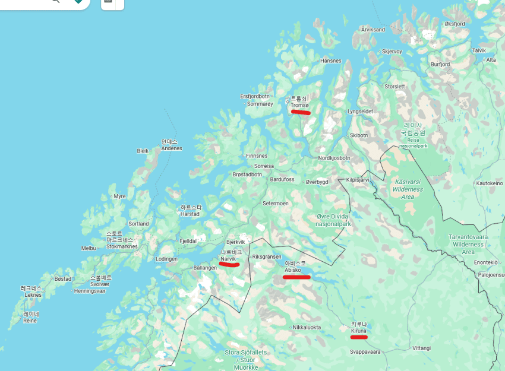
스웨덴 노르웨이
키루나-아비스코-나르비크-트롬소
묶어서 가면 좋을거같다.
키루나에 공항이 있어서 입국이 가능하고 2차대전 노르웨이 침공의 원인인 철광석이 나오는 곳. 지금도 광산투어가 운영된다.
아비스코는 나르비크 가는 길목이 있는데 여기가 무슨 지리적 요건에 의해서 오로라가 보일 확률이 더 높다고 한다.
나르비크는 베저위붕 작전의 종착지이기는 한데, 전적지나 뒤집힌 Z2구축함 보러가려면 또 차가 필요해서 애매. 그냥 북극열차를 하나의 경험으로 봐야할듯.
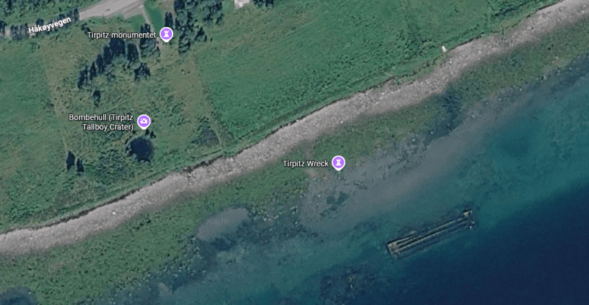
트롬소에는 틸핏츠가 톨보이 폭탄을 맞은곳이 있다. 와 위성사진으로도 보여서 놀랐ㅇ름
그런데 숙박비가 왜인지 너무 비싸서.. 나는 틸핏츠가 나르비크에서 폭탄을 맞고 죽었으면 좋았을거같음.
여기 북극권 일대 춥고 교통편도 열악하고 오로라도 운빨이고 전체적으로 비싸서 가보고싶은데 시간과 자본관계상 너무 어려움 ㅜㅜ
그 외 생각해봤지만 우선도가 낮았던 곳
러시아 - 볼고그라드, 쿠빙카 전차박물관
의외로 볼고그라드에 막 파울루스씨가 농성한 집!! 같은 전적지가 남아있는게 아니던데.. 가본사람 있나 궁금함
체코-프라하 전차박물관, 주데텐란드 요새
체코 역시 2차대전의 주역이지만 그렇다고 그 고생해서 들어가기에는 수지타산이 안맞는거같기도함.
전차래봐야 38(t)말고 뭘 더 봐야한다고..
빈-전차박물관
상동.. 오스트리아 전차가 뭐 볼게 있는지...
근데 최근에 갤에 글 올라온거 봐서 히틀러집같은게 있으려나? 궁금해짐
터키-차카날레/갈리폴리
처칠의 인생이 망한곳 가보고 싶은데 이거 막상 전적지는 안남아있는것으로 보임. 묘지는 많이있고
핀란드- 헬싱키 수오멘린나 해군기지, 노르웨이 - 오슬로 오스카르보르 요새, 덴마크 코펜하겐
추움. 딱히 전적지가 남아있지는 않음. 블뤼허 격침 원툴.
댓글
수집 당시 댓글 26개
ㅇㅇ · 11.07 14:44:21
· ㅇㅇ(39.7) · 11.07 14:50:12
· ㅇㅇ(39.7) · 11.07 14:50:43
· ㅇㅇ · 11.07 20:15:44
진소담. · 11.07 14:47:18
· ㅇㅇ(39.7) · 11.07 14:48:31
· ㅇㅇ · 11.09 02:04:19
녀고생 · 11.07 19:23:23
· 녀고생 · 11.07 19:23:39
ㅇㅇ · 11.07 19:38:34
· ㅇㅇ(39.7) · 11.07 19:42:50
· ㅇㅇ · 11.07 20:15:52
배붕이1 · 11.08 00:51:21
삼맥종 · 11.08 03:12:23
Arsenal · 11.08 13:24:58
땨뗘(봇) · 11.09 01:20:05
암타황제강시현 · 11.09 01:21:45
· ㅇㅇ · 11.09 01:26:09
ㅇㅇ · 11.09 01:26:16
ㅇㅇ · 11.09 01:26:16
· 암타황제강시현 · 11.09 01:26:23
ㅇㅇ · 11.09 02:02:49
· ㅇㅇ(39.7) · 11.09 06:06:49
키나루디안마기 · 11.09 02:03:07
Jefferson01 · 11.09 06:44:08
· ㅇㅇ(39.7) · 11.09 07:40:13